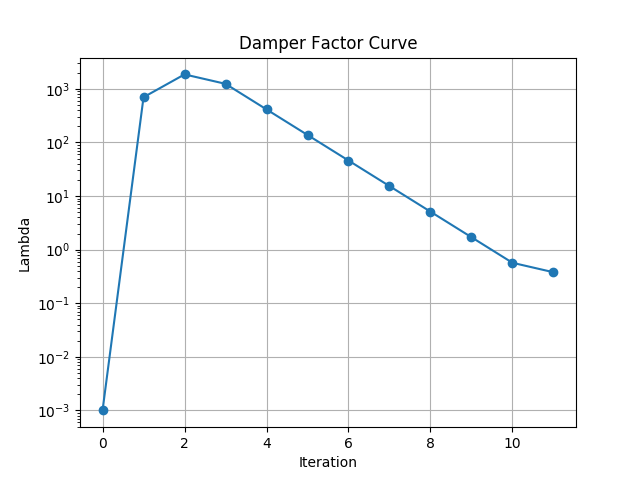

<head>
    <script type="text/javascript" async 
    src="https://cdnjs.cloudflare.com/ajax/libs/mathjax/2.7.5/MathJax.js?config=TeX-MML-AM_CHTML">
    </script>
    <!-- <script src="https://cdn.rawgit.com/google/code-prettify/master/loader/run_prettify.js"></script> -->
    <script src="../run_prettify.js"></script>
    <style>
        li.L0,
        li.L1,
        li.L2,
        li.L3,
        li.L5,
        li.L6,
        li.L7,
        li.L8 {
            list-style-type: decimal !important;
        }
        table, th, td {
        border: 1px solid black;
        border-collapse: collapse;
        }
    </style>
</head>
<h1 align="center">第三章 课程作业</h1>
<h2>1. LM算法估计曲线参数</h2>
<h2>1.1 阻尼因子随迭代变化曲线图</h2>
<pre class="prettyprint lang-cpp linenums">
    import os
    import sys
    import matplotlib.pyplot as plt
    import re

    def ExecuteCurveFitting():
        os.chdir(os.path.dirname(os.path.realpath(__file__)))
        exec_file = '../CurveFitting_LM/build/app/testCurveFitting'
        log_filename = 'output.log'
        os.system(exec_file + ' > ' + log_filename)
        return log_filename

    def ExtractData(log_filename):
        text_file = open(log_filename, 'r').read()
        pattern = 'iter:\s(.*?) , .*Lambda=\s(.*?)$'
        match_list = re.findall(pattern, text_file, flags=re.MULTILINE)    
        i = [int(p[0]) for p in match_list]
        lam = [float(p[1]) for p in match_list]
        return i, lam

    if __name__ == "__main__":
        print('start')
        log_filename = ExecuteCurveFitting()
        i, lam = ExtractData(log_filename)
        plt.plot(i, lam, 'o-')
        plt.yscale('log')
        plt.ylabel('Lambda')
        plt.xlabel('Iteration')
        plt.title('Damper Factor Curve')
        plt.grid(1)
        plt.show()    
</pre>

<p style="font-size: 12pt; text-align: center; width: 45%; margin-right: auto; margin-left: auto; margin-bottom: 0.5em;">
    图1-1: 阻尼因子随迭代变化曲线图</p>
    <p style="clear: both;">

<h2>1.2 估计曲线\(y = ax^2 + bx +c\)的参数</h2>
<p>重新实现一个QuadraticCurveFittingEdge类：</p>
<pre class="prettyprint lang-cpp linenums">
class QuadraticCurveFittingEdge: public Edge
{
    public:
        EIGEN_MAKE_ALIGNED_OPERATOR_NEW
        QuadraticCurveFittingEdge( double x, double y ): Edge(1,1, std::vector<std::string>{"abc"}) {
            x_ = x;
            y_ = y;
        }
        // 计算曲线模型误差
        virtual void ComputeResidual() override
        {
            Vec3 abc = verticies_[0]->Parameters();  // 估计的参数
            residual_(0) = abc(0)*x_*x_ + abc(1)*x_ + abc(2)  - y_;  // 构建残差
        }

        // 计算残差对变量的雅克比
        virtual void ComputeJacobians() override
        {
            Eigen::Matrix<double, 1, 3> jaco_abc;  // 误差为1维，状态量 3 个，所以是 1x3 的雅克比矩阵
            jaco_abc << x_ * x_ , x_ , 1;
            jacobians_[0] = jaco_abc;
        }
        /// 返回边的类型信息
        virtual std::string TypeInfo() const override { return "QuadraticCurveFittingEdge"; }
    public:
        double x_,y_;  // x 值， y 值为 _measurement
};
</pre>
<p>重写采样噪声模拟函数：</p>
<pre class="prettyprint lang-cpp linenums">
shared_ptr<Vertex> EmulateObservation(int data_num, double w_sigma, Problem& problem)
    {
        shared_ptr< CurveFittingVertex > vertex(new CurveFittingVertex());
        // 设定待估计参数 a, b, c初始值
        vertex->SetParameters(Eigen::Vector3d (0.,0.,0.));
        // 将待估计的参数加入最小二乘问题
        problem.AddVertex(vertex);
    
        std::default_random_engine generator;
        std::normal_distribution<double> noise(0.,w_sigma);
        double a=1.0, b=2.0, c=1.0;         // 真实参数值
            // 构造 N 次观测
        for (int i = 0; i < data_num; ++i) {
    
            double x = i/100.;
            double n = noise(generator);
            // 观测 y
            double y = a*x*x + b*x + c + n;
    
            // 每个观测对应的残差函数
            shared_ptr< QuadraticCurveFittingEdge > edge(new QuadraticCurveFittingEdge(x,y));
            std::vector<std::shared_ptr<Vertex>> edge_vertex;
            edge_vertex.push_back(vertex);
            edge->SetVertex(edge_vertex);
    
            // 把这个残差添加到最小二乘问题
            problem.AddEdge(edge);
        }
        return vertex;
    }
</pre>

<h4>运行结果</h4>
<p style="font-size: 12pt; text-align: center; width: 45%; margin-right: auto; margin-left: auto; margin-bottom: 0.5em;">
<table align="center">
    <tr>
        <td>噪声方差</td>
        <td>a</td>
        <td>b</td>
        <td>c</td>
    </tr>
    <tr>
        <td>0 (真实值)</td>
        <td>1</td>
        <td>2</td>
        <td>1</td>
    </tr>
    <tr>
        <td>0.1</td>
        <td>1.06107 </td>
        <td>1.96183</td>
        <td>0.999517</td>
    </tr>
    <tr>
        <td>1.0</td>
        <td>1.61039</td>
        <td>1.61853</td>
        <td>0.995178</td>
    </tr>
</table>
表1-1: 曲线参数估计结果
</p>
<p>可以看到给定的噪声较小时，估计结果较为准确。当噪声方差达到1.0时，估计结果已经出现明显的偏差。</p>
<h2>2</h2>
\[
    \mathbf a = \frac{1}{2}
    \left(
        \underbrace{q_{b_i b_k}(a^{b_k} + n_k^a - b_k^a)}_{part\ 1} + 
        \underbrace {q_{b_i b_{k+1}}(a^{b_{k+1}} + n_{k+1}^a - b_k^a)}_{part\ 2}
    \right)
\]

\[
    \alpha_{b_i b_{k+1}} = \alpha_{b_i b_k} + \beta_{b_i b_k} \delta t + \frac{1}{2} \mathbf a \delta t^2
\]
<h3>2.1 \(f_{15}\)</h3>

\[
    f_{15} = \frac{\partial \alpha_{b_i b_{k+1}}}{\partial \delta b_k^g} = 
    \frac{1}{4} \frac{\partial}{\partial \delta b_k^g} 
    \left(
        q_{b_i b_{k+1}}(a^{b_{k+1}} + n_{k+1}^a - b_k^a) \delta t^2
    \right)
\]
\[
    = 
    \frac{1}{4}
    \frac
    {   
        \partial
        q_{b_i b_k} \otimes 
        \left[\begin{matrix}
            1 \\ \frac{1}{2}\omega \delta t
        \end{matrix}\right] \otimes 
        \left[\begin{matrix}
            1 \\ -\frac{1}{2}\delta b_k^g \delta t
        \end{matrix}\right]
        (a_{b_{k+1}} - b_k^a)
        \delta t^2
    }
    {\partial \delta b_k^g}
\]

\[
    = 
    \frac{1}{4}
    \frac
    {   
        \partial
        R_{b_i b_{k+1}} 
        exp \left( \left[
            -\delta b_k^g \delta t
        \right]_\times\right)
        (a_{b_{k+1}} - b_k^a)
        \delta t^2
    }
    {\partial \delta b_k^g}
\]

\[
    = 
    \frac{1}{4}
    \frac
    {   
        \partial
        R_{b_i b_{k+1}} 
        (\mathbf I + \left[ -\delta b_k^g \delta t \right]_\times)
        (a_{b_{k+1}} - b_k^a)
        \delta t^2
    }
    {\partial \delta b_k^g}
\]

\[
    = 
    -\frac{1}{4}
    \frac
    {   
        \partial
        R_{b_i b_{k+1}} 
        (\left[ (a_{b_{k+1}} - b_k^a)\delta t^2 \right]_\times)
        (-\delta b_k^g \delta t)
    }
    {\partial \delta b_k^g}
\]
\[
    = 
    -\frac{1}{4}
    R_{b_i b_{k+1}} 
    (\left[ (a_{b_{k+1}} - b_k^a)\delta t^2 \right]_\times)
    (-\delta t) 
\]


<h3>2.2 \(g_{12}\)</h3>
\[
    g_{12} = \frac{\partial \alpha_{b_i b_{k+1}}}{\partial n_k^g} = 
    \frac{1}{4} \frac{\partial}{\partial \delta b_k^g} 
    \left(
        q_{b_i b_{k+1}}(a^{b_{k+1}} + n_{k+1}^a - b_k^a) \delta t^2
    \right)
\]

<h2>3. </h2>

\[
    \left( \mathbf{J^\top}\mathbf{J} + \mu \mathbf{J} \right)\Delta x_{lm} = -\mathbf{J^\top} f
\]

\[
    \because \mathbf{J^\top}\mathbf{J} = \mathbf{V\Lambda V ^\top}, \mathbf{V}^{-1} = \mathbf{V^\top}
\]

\[
    \therefore \mathbf{J^\top}\mathbf{I} + \mu \mathbf{J} = 
    \mathbf{V\Lambda V^\top} + \mathbf{V}\mu\mathbf{IV^\top}
\]
\[
    = \mathbf{V}\left(  
        \mathbf{\Lambda} + \mu\mathbf{I}
        \right)\mathbf{V^\top}
\]

<p>denote:</p>
\[
    \mathbf A = \mathbf{\Lambda} + \mu\mathbf{I} = 
    \left[
    \begin{matrix}
        \lambda_1+\mu & \dots & 0 \\
        \vdots & \ddots & \vdots \\
        0 & \dots & \lambda_n+\mu
    \end{matrix}
    \right]  \ \ \tag{3-1}
    
\]

\[
    \because \mathbf V = \left[v_1\ v_2\ \dots v_n\right],\ \mathbf{J^\top} f = \mathbf F'^\top
\]

\[
    \therefore \Delta x_{lm} 
    = - \left( \mathbf{J^\top}\mathbf{J} + \mu \mathbf{J} \right)^{-1} \mathbf F'^\top
    = -\mathbf{VA^{-1}V^\top}\mathbf F'^\top
\]
\[
    
    = -\mathbf{VA^{-1}}
    \left[
    \begin{matrix}
    v_1^\top \mathbf F'^\top \\
    v_2^\top \mathbf F'^\top \\
    \vdots \\
    v_n^\top \mathbf F'^\top 
    \end{matrix}
    \right]

    = -\mathbf{V}
    \left[
    \begin{matrix}
    \frac{v_1^\top \mathbf F'^\top}{\lambda_1+\mu} \\
    \frac{v_2^\top \mathbf F'^\top}{\lambda_2+\mu} \\
    \vdots \\
    \frac{v_n^\top \mathbf F'^\top}{\lambda_n+\mu} 
    \end{matrix}
    \right]

     = -[v_1 \ v_2 \ \dots v_n]
    \left[
    \begin{matrix}
    \frac{v_1^\top \mathbf F'^\top}{\lambda_1+\mu} \\
    \frac{v_2^\top \mathbf F'^\top}{\lambda_2+\mu} \\
    \vdots \\
    \frac{v_n^\top \mathbf F'^\top}{\lambda_n+\mu} 
    \end{matrix}
    \right]
\]
\[
    = - \sum_{j=i}^{n} v_j \frac{v_j^\top \mathbf F'^\top}{\lambda_j + \mu}
\]

\[
    \because shape(v_j^\top \mathbf F'^\top) = 1 \times 1
\]
\[
    \therefore v_j (v_j^\top \mathbf F'^\top) = (v_j^\top \mathbf F'^\top)v_j 
\]
\[
    \therefore \Delta x_{lm} = 
    - \sum_{j=i}^{n} \frac{v_j^\top \mathbf F'^\top}{\lambda_j + \mu} v_j
\]